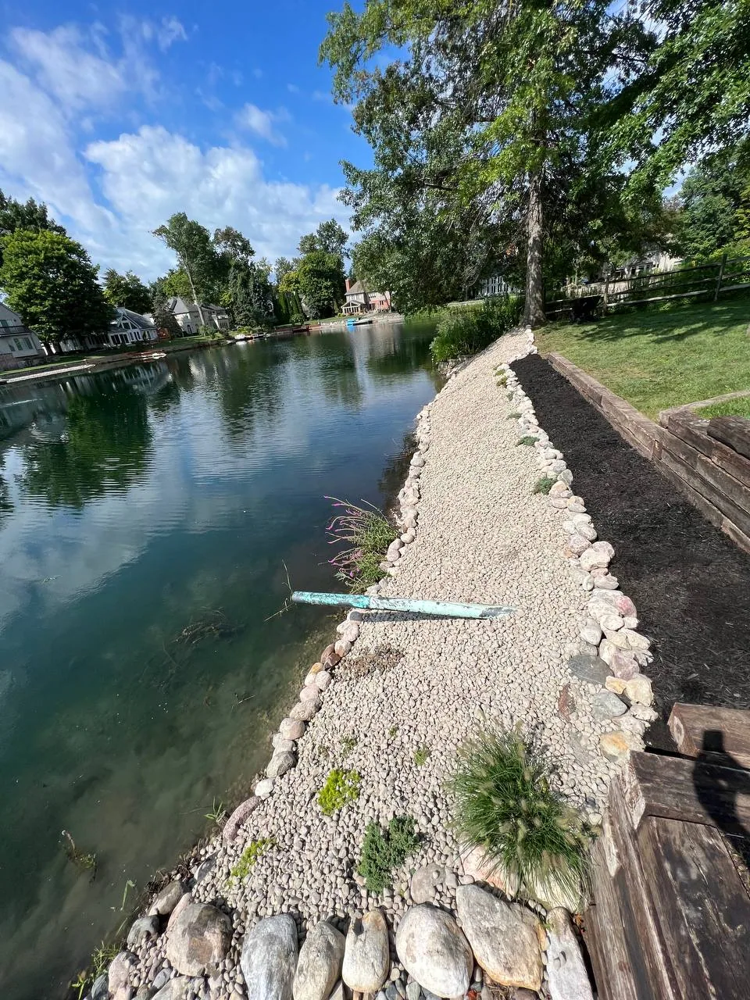
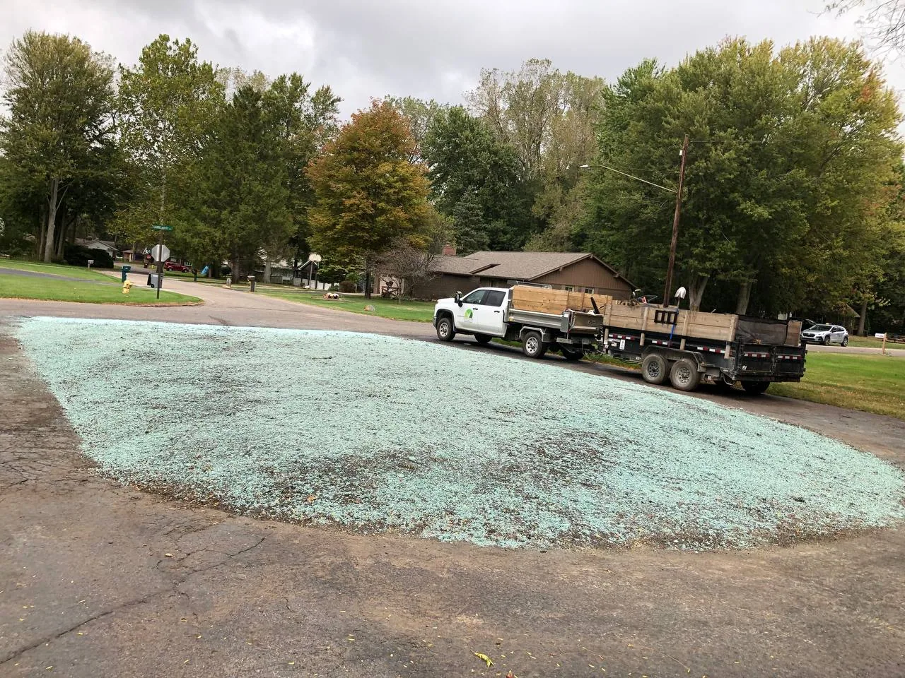

★★★★★
“The tree the guys at Terramorph took down was quite tall and located close to my pool. They removed the tree without dropping a ton of tree into my pool. I highly recommend this company and will use them again.”Jennifer Tierney

Home / Drainage Solutions
Drainage expertise for clay soil and flat lots
Practical drainage solutions for wet yards, pooling water, soggy lawns, and water moving toward patios or foundations in Northwest Ohio conditions.
Great work at a fair price. They did what they said they were going to do, when they said they would do it.Richard Hansen
A lot of companies tell you what they are going to do. This company far exceeded their word.jon mercurio
Attention to detail was 2nd to none!Adam Raider
They did an excellent job and completed the same day. I would highly recommend them.Teresa Thompson
10/10 Company, the boys made my house look great. Customer Service is great, best deal on the market.Alejandro Urrea
Great work very accommodating and extremely professional will definitely have them do all my future work.Pete Detgen
Great, professional group of guys!Josh Johnson
They did a fantastic job for me. I will recommend them to colleagues.Dominic Urquiola
Fast and reliable. Ty did excellent work and very reasonable cost. I would not hesitate to suggest him to others.Larry Calcamuggio
Amazing service every time and prompt to all appointments.CJ Miller
Sound familiar?
What you get
 01
01How diagnosis works
Most drainage failures happen when a product gets installed before the problem is understood. Terramorph walks the property and answers three questions: where does the water come from, where can it safely go, and what is the simplest fix that gets it there.

02Common fixes explained
These are the tools Terramorph reaches for most in Wood and Lucas County - and none of them is the right answer for every yard.
How we work
Homeowners need to know what happens next: Terramorph reviews the property, talks through the goal, explains practical options, and gives a clear estimate before work begins.
City, goal, frustration, timeline, range, and photos captured quickly.
Grade, water flow, access, soil, sun, materials, and maintenance expectations.
Clear options that connect budget to property improvement and long-term durability.
Professional install, cleanup, walkthrough, and follow-up.
Recent work




Reviews
“The tree the guys at Terramorph took down was quite tall and located close to my pool. They removed the tree without dropping a ton of tree into my pool. I highly recommend this company and will use them again.”Jennifer Tierney
“They did an excellent job and completed the same day. I would highly recommend them.”Teresa Thompson
“10/10 Company, the boys made my house look great. Customer Service is great, best deal on the market.”Alejandro Urrea
Questions homeowners ask
Still wondering about something? Call 419-873-6801, 7 a.m. to 8 p.m.
Terramorph evaluates grading, runoff, downspouts, soil, and low spots to recommend practical drainage solutions for Northwest Ohio yards.
Flat lots, clay soil, freeze-thaw cycles, and heavy rain affect how drainage and landscape work should be planned in Wood and Lucas County.
Yes. Terramorph offers free estimates for landscape design, patios, drainage, lighting, lawn maintenance, seasonal cleanups, and related outdoor property work.
Terramorph serves Wood and Lucas County, with especially strong coverage in Perrysburg, Sylvania, Maumee, Monclova, Holland, Waterville, Whitehouse, and Ottawa Hills.
Terramorph at a glance
Terramorph LLC is a landscape design and build company based in Perrysburg, Ohio, founded by brothers Ty and Trent Lincoln. We handle drainage solutions along with patios, drainage, landscape beds, lighting, lawn care, cleanups, and snow removal for homes and businesses across Wood and Lucas County. 4.9 stars from more than 220 Google reviews, BBB accredited, and estimates are free.
Keep reading
Near you
Free estimate
Free estimate
Send project details through the quote form, or call directly for urgent service questions and scheduling.
Call now or jump straight to the quote request form.